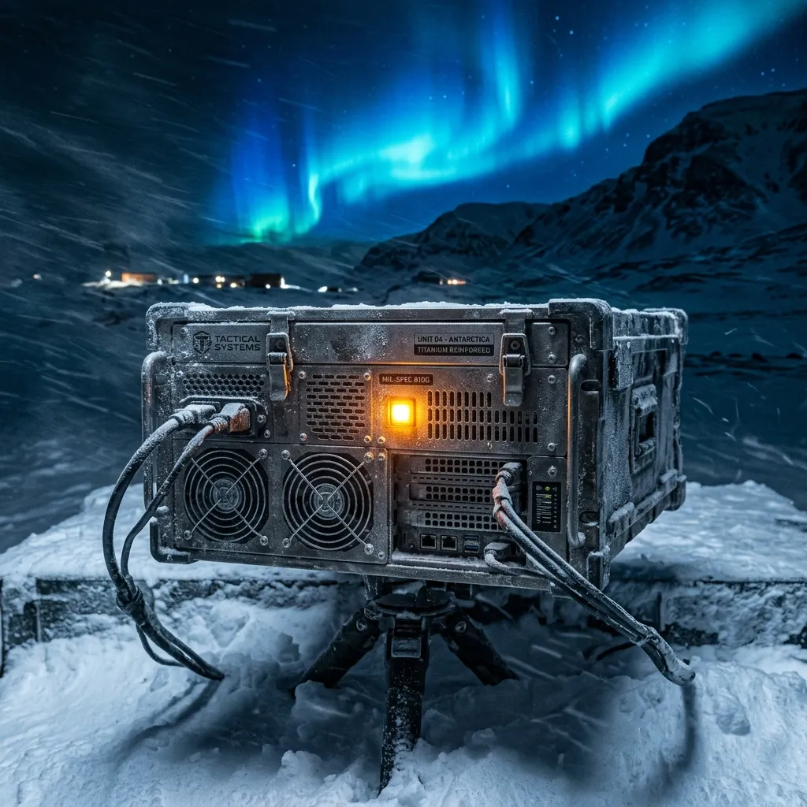
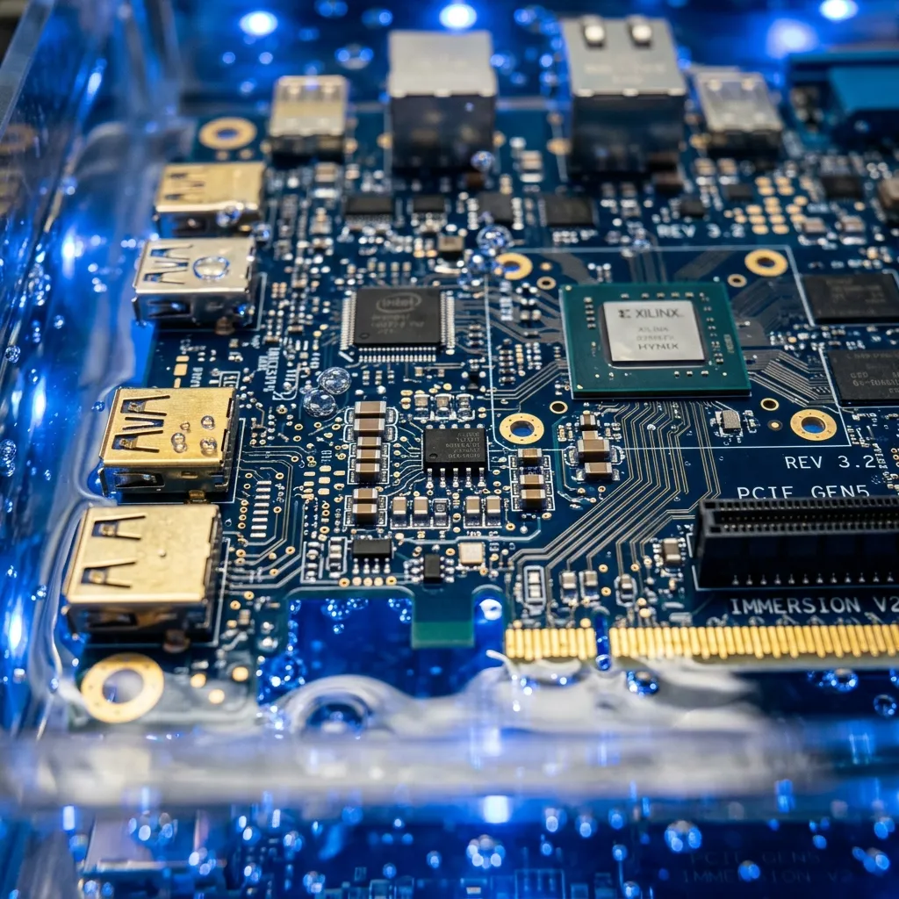
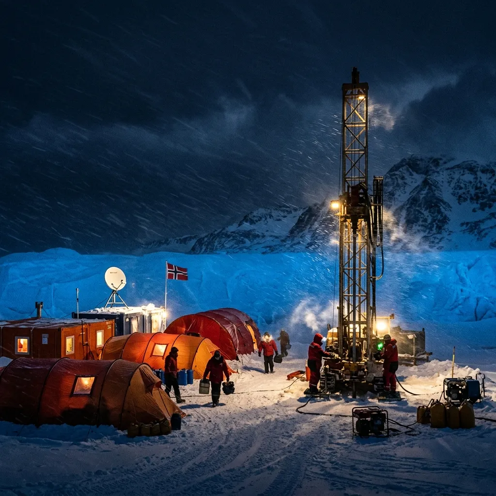

Server Architecture Built for the Bottom of the World
GlacierMesh supplies liquid-chilled edge arrays and satellite burst telemetry for polar glaciologists operating where standard silicon fails.
Standard enterprise rack servers are wonderfully efficient until the ambient air drops to -45°C and condensed humidity welds optical couplings shut. We build self-contained, fluorinert-immersed edge computing nodes that treat catabatic blizzards as routine heat sinks rather than hardware emergencies. From the Ross Ice Shelf to Svalbard boreholes, GlacierMesh delivers local telemetry processing before snowdrifts bury your base station.
Cryogenic Edge Engineering & Ross Ice Shelf Protocols

High-throughput seismic sensors and deep-ice radar arrays produce terabytes of uncompressed acoustic data every hour. Transmitting raw sensor feeds directly over low-orbit satellite constellations during polar night is both financially ruinous and power-prohibitive when your generator relies on aviation fuel dragged across 400 kilometres of sea ice.
GlacierMesh edge nodes sit directly at the borehole head, running real-time spectral reduction and error correction inside sealed, double-walled titanium chassis maintained at a constant 18°C by internal thermodynamic loops.
Our signature Boreas-9 chassis bypasses moving mechanical cooling fans entirely, utilizing passive dielectric immersion fluids that absorb CPU thermals and dump them into external ground-loop coils buried in the firn layer.
When ambient temperatures plunge below -55°C, piezoelectric heating elements along the fiber interface engage automatically, preventing micro-fractures in the glass substrate without drawing down precious battery banks. The result is continuous, uncorrupted data ingestion that remains online even when katabatic winds sever primary satellite dishes for weeks at a time. Your field team receives pre-processed anomaly alerts via low-frequency mesh radios, preserving battery reserves for critical drilling operations while ensuring no seismic event goes unrecorded.
High-Latitude Burst Telemetry & Local Queue Resilience
When low-orbit satellite constellations dip below the polar horizon, or brutal atmospheric interference degrades K-band connectivity, standard data uplinks simply drop packets or freeze. GlacierMesh architecture employs extreme-endurance local flash buffers rated for structural integrity down to -60°C. Storage is cheap at the edge, but polar satellite bandwidth is sacred—we process deep acoustic and seismic telemetry directly at the ice face, meaning you transmit only the heavily compressed spectral deltas.
During a blizzard blackout, our resilient local queues automatically stockpile structured data without human intervention. The moment orbital alignment is restored, the array blasts a synchronized telemetry burst, ensuring you acquire complete time-series continuity without squandering vital generator fuel on failed reconnection handshakes.
- Algorithmic Compression: Achieves a 100:1 raw acoustic to spectral delta ratio, slashing transmission time.
- Deep-Cold Buffering: SSD enclosures are thermally jacketed to prevent freezing during prolonged blackouts.
- Asynchronous Synchronization: Prioritises anomaly spikes over ambient noise thresholds when bandwidth is limited.
Anatomy of a Sub-Zero Titanium Immersion Chassis
Grade-5 Titanium Shell
Milled from a solid billet, the enclosure delivers absolute pressure resistance and blocks salt-fog corrosion in aggressive coastal Antarctic deployments. No external vents, no compromised gaskets.
Fluorinert FC-3283 Immersion Bath
The entire mainboard is submerged in a non-conductive dielectric fluid transfer medium. It eliminates condensation shorts and aggressively channels heat away from critical processors without mechanical fans.
Piezoelectric Optical Couplers
Fiber optic data lines entering the chassis are safeguarded by self-deicing glass connectors. High-frequency piezoelectric vibration combined with localized thermal induction prevents catastrophic ice splintering.
Solid-State Thermoelectric Heat Pumps
Dual-mode heating and cooling solid-state modules automatically balance internal temperature gradients, leveraging the extreme external cold as an infinite heatsink while keeping CPUs above minimum boot thresholds.
By enforcing a strict design policy of no mechanical fans, no exposed copper contacts, and absolutely zero moving parts to seize in the arctic air, the Boreas-9 redefines hardware longevity. The internal thermodynamic loop continuously monitors the ambient delta—when the outside air acts as a perfect cryogenic sink, the system idles the thermal pumps and relies entirely on passive fluid convection.
Conversely, if localized solar radiation inside a weather tent briefly spikes the external temperature, the solid-state thermoelectric array instantly engages to maintain the internal immersion fluid at an optimal 18°C. This extreme thermal dynamic range guarantees your telemetry array simply ignores whatever chaotic weather patterns develop outside.
Download Full Hardware Spec SheetOperational Notes from the Field
Tested rigorously where human rescue is impossible for six months of the year.

Ross Ice Shelf Borehole Array (Antarctica)
Deployed 320 metres deep inside a glacial borehole, this monitoring station was subjected to crushing hydrostatic pressures and ambient temperatures stalling at -48°C. The array was tasked with mapping localized ice shelf calving events and seismic fracturing under the Ross Ice Shelf, requiring uninterrupted acoustic processing.
The Boreas-9 chassis maintained internal fluid temperatures perfectly, filtering out background tidal noise and successfully bursting compressed seismic deltas to an overhead satellite pass. The continuous data output allowed researchers to chart stress fractures in real-time without once requiring a technician to descend and unfreeze a seized data logger.
Pyramiden Permafrost Seismic Mesh (Svalbard)
Operating near an abandoned mining settlement on Svalbard, this mesh of edge nodes records year-round continuous tremor data in shifting permafrost. High humidity combined with extreme freezing cycles typically destroys standard sensor logic boards within four weeks due to micro-condensation.
Our titanium enclosures and dielectric immersion neutralized the moisture threat completely. The mesh correctly identified three distinct sub-surface shifts over an eight-month winter, transmitting the findings seamlessly via low-frequency radio links to the main research vessel moored offshore.
Summit Station High-Altitude Node (Greenland)
Positioned on the highest point of the Greenland ice sheet, this node faced extreme wind shear exceeding 130 km/h and intense solar flare electromagnetic interference. Standard telemetry dishes were repeatedly torn away by the katabatic winds.
The GlacierMesh node relied on its massive local flash buffering to endure three distinct multi-week communications blackouts. Once conditions subsided, it transmitted a flawless backlog of atmospheric telemetry, completely validating our decentralized queue compression protocols.
Verified Field Reports
Unfiltered feedback from scientists who stopped worrying about server maintenance and started focusing on ice cores.
"When the 80-knot storms hit, our primary concern used to be whether the data logger would freeze solid before we could extract the SSDs. With the GlacierMesh nodes, we simply retreated to the mess tent and watched the telemetry stream uninterrupted on our localized network."— Dr. Elena Vance, Lead Glaciologist, British Antarctic Survey
"The self-deicing optical connectors are nothing short of an engineering marvel in the field. Not having to expose our hands to -50°C air to scrape ice off a fiber coupling has fundamentally changed our winter deployment strategies."— Prof. Lars Lindqvist, Polar Seismic Institute, Tromsø
Expedition Technical Enquiries
Straight answers for expedition logisticians and field engineers.
What is the cold-boot procedure if power drops to zero at -50°C?
If primary power fails entirely and internal temperatures equalize with the outside air, the system will not immediately boot the CPU upon power restoration. Instead, the piezoelectric heating circuits intelligently engage first, slowly raising the dielectric fluid temperature to a safe -10°C threshold. Only then does the logic board execute a controlled cold-start, preventing immediate thermal shock to the silicon.
How much power does the internal piezoelectric heating circuit draw?
The heating circuit is strictly regulated and only draws a baseline of 45 watts during a heavy de-icing cycle. Because the titanium chassis is thoroughly double-walled with a vacuum insulation layer, thermal retention is extremely high. The heater typically pulses for less than six minutes every hour to maintain optimal operating viscosity in the immersion fluid.
Can GlacierMesh chassis be integrated with solar/wind hybrid generator setups?
Absolutely. Our power intake controllers accept wildly fluctuating DC inputs ranging from 12V up to 72V, smoothing out the erratic spikes typical of wind turbines in katabatic storms. The integrated battery management system ensures that priority telemetry storage receives power first, even if the solar panels are heavily obscured by frost.
What fluid maintenance is required for the Fluorinert immersion core?
Zero in-field maintenance is required. The Fluorinert FC-3283 is sealed within the chassis at our Longyearbyen facility under a strict nitrogen-purged atmosphere. The fluid will not degrade, evaporate, or require topping up for the entire operational lifespan of the node, typically exceeding ten years.
How are optical fiber cables protected against glacier movement and firn creep?
External fiber runs are shielded in articulated Kevlar-reinforced conduits that absorb immense lateral pressure. At the junction box on the chassis, our proprietary piezoelectric optical couplers prevent rigid ice from forming, allowing the connection to flex slightly alongside the glacial movement without shattering the inner glass core.
Requisition a GlacierMesh Field Array
Book equipment allocations 6 months prior to vessel departure from Hobart or Christchurch. Due to custom titanium chassis manufacturing lead times in Longyearbyen, advanced scheduling is critical for polar field seasons.